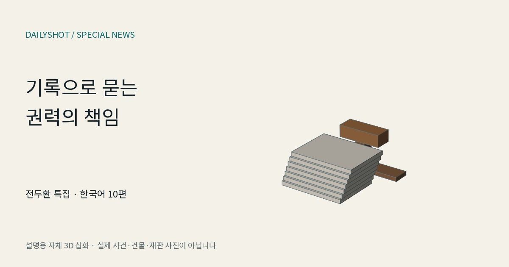

언론 통폐합, 보도를 막기 전에 일터를 바꿨다
해직과 통폐합, 취업 제한을 함께 본 진실화해위원회의 판단. 통제는 인사와 소유구조에도 새겨졌다.

언론 통제는 기사 한 줄의 문제만이 아니다
진실화해위원회의 1980년 언론사 통폐합·언론인 강제해직 사건 결정은 신군부가 권력 장악에 필요한 언론 통제를 계획했다고 정리한다. 비판적인 언론인의 해직과 언론사의 통폐합은 분리된 우연이 아니라 조사대상이 된 통제의 방식이었다. 어떤 기사를 지우라고 요구하는 것에 앞서 누가 보도하고 어떤 회사가 살아남을지 바꾼 것이다.
자발적 결정이라는 외형을 넘어
위원회는 통폐합 대상 선정에 정치적 고려가 있었고, 거부할 경우 국가기관을 동원한 법적 처리 압박 등 강압수단이 행사됐다고 설명한다. 재산의 환수·기부채납 과정에서도 적법절차가 무시됐다고 봤다. 형식상 합의나 회사의 조치가 있었다는 사실만으로 국가의 강압이 사라지는 것은 아니라는 점을 읽을 수 있다.
해직 뒤에도 이어진 불이익
결정문은 보안사가 명단을 작성해 언론사에 전달한 경과와 해직 뒤 취업 제한을 다룬다. 일부 해직 언론인은 삼청교육대에 수용됐다. 일자리를 잃는 데서 끝나지 않고 다시 일할 기회까지 막히는 통제였다. 이는 기자 개인의 생계와 함께 사회가 접할 수 있는 정보의 범위를 줄이는 문제다. 후자는 조사결정을 바탕으로 한 편집부의 분석이다.
문화 통제와 사생활 풍문은 구별한다
언론·문화정책을 비판하면서 확인되지 않은 연예인 관련 사생활 소문을 보태는 것은 국가폭력의 설명을 더 정확하게 만들지 않는다. 이번 기사는 공식 조사에서 확인된 언론 통제에 범위를 한정했다. 개별 방송사의 재산 변동, 영화 검열의 구체 사례와 이른바 3S 정책 설명은 각각의 원자료가 확보되면 별도로 다룬다.
출처와 확인 범위
판결·조사결정·기관기록의 판단 주체와 시점을 구별합니다. 현재 미납 추징액·개별 자산·현행 법령의 후속 변경은 이번 확인 범위가 아닙니다. 책 완독·영화 전체 재시청 서평이 아닙니다.
- 진실화해위: 1980년 언론사 통폐합 및 언론인 강제해직 사건
원자료 열기 ↗